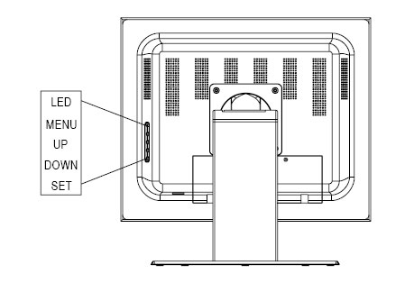

| NOTE: | On-Screen Manager detail can be found here Bigtide HL1916 Screen Manager Controls |
Illustration 12: Bigtide HL1916 LCD Monitor Control Button

Table 4: Key Functions Without Active OSD Menu
| Keys | Action |
| Menu | Activate OSD |
| Up (Toggle Function) | Adjust backlight |
| Down (Toggle Function) | Do auto adjust manually (VGA only) |
Table 5: Key Functions in the OSD Menu
| Keys | Situation | Action |
| Menu | Always | Jump to next line |
| Up | Slide controller | Increase value |
| Selection point | To previous selection | |
| Command | “Enter key” | |
| Down | Slide Controller | Decrease value |
| Selection point | To subsequent selection | |
| Set | Except “Exit OSD” menu | One menu level upwards (Settings are retained) |
| In “Exit OSD” menu | Return to main menu (Settings are retained) |